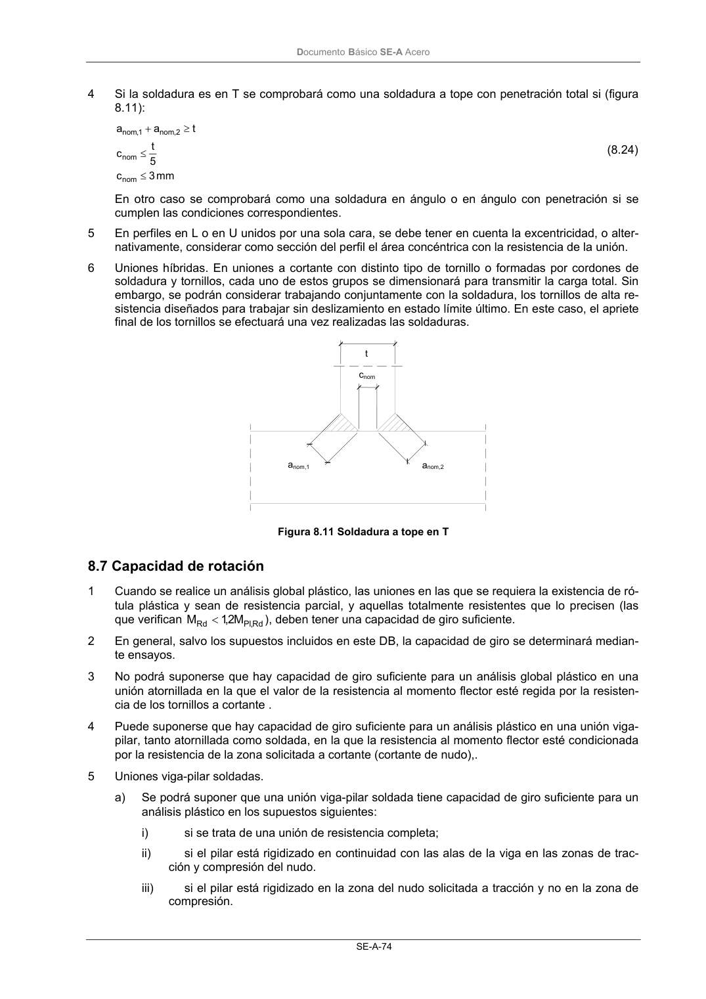
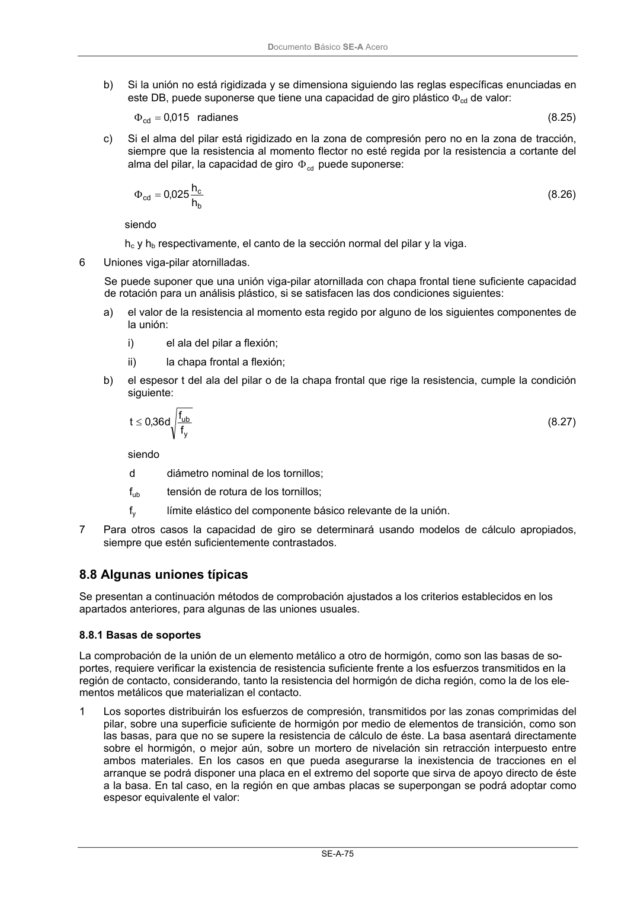

DB-SE-A · 8.7 Capacidad de rotación · versión 2007-10-23 · capa oficial
Formatos: JSON compacto · Markdown · PDF fuente
Ámbito del documento · texto del ámbito · documento y tablas
ID técnico a0119 · PDF pág. 76-77 · jerarquía no validada por persona · contrastado con el literal de la página 76 (candidato tipográfico); no validado por persona · padre: raíz
8.7 Capacidad de rotación 1 Cuando se realice un análisis global plástico, las uniones en las que se requiera la existencia de ró- tula plástica y sean de resistencia parcial, y aquellas totalmente resistentes que lo precisen (las que verifican Rd , Pl Rd M 2,1 M < ), deben tener una capacidad de giro suficiente. 2 En general, salvo los supuestos incluidos en este DB, la capacidad de giro se determinará median- te ensayos. 3 No podrá suponerse que hay capacidad de giro suficiente para un análisis global plástico en una unión atornillada en la que el valor de la resistencia al momento flector esté regida por la resisten- cia de los tornillos a cortante . 4 Puede suponerse que hay capacidad de giro suficiente para un análisis plástico en una unión viga- pilar, tanto atornillada como soldada, en la que la resistencia al momento flector esté condicionada por la resistencia de la zona solicitada a cortante (cortante de nudo),. 5 Uniones viga-pilar soldadas. a) Se podrá suponer que una unión viga-pilar soldada tiene capacidad de giro suficiente para un análisis plástico en los supuestos siguientes: i) si se trata de una unión de resistencia completa; ii) si el pilar está rigidizado en continuidad con las alas de la viga en las zonas de trac- ción y compresión del nudo. iii) si el pilar está rigidizado en la zona del nudo solicitada a tracción y no en la zona de compresión. t cnom anom,1 anom,2 DocumentoBásico SE-A Acero SE-A-75 b) Si la unión no está rigidizada y se dimensiona siguiendo las reglas específicas enunciadas en este DB, puede suponerse que tiene una capacidad de giro plástico Φcd de valor: radianes 015 ,0 cd= Φ (8.25) c) Si el alma del pilar está rigidizado en la zona de compresión pero no en la zona de tracción, siempre que la resistencia al momento flector no esté regida por la resistencia a cortante del alma del pilar, la capacidad de giro cd Φ puede suponerse: b c cd h h 025 ,0 = Φ (8.26) siendo hc y hb respectivamente, el canto de la sección normal del pilar y la viga. 6 Uniones viga-pilar atornilladas. Se puede suponer que una unión viga-pilar atornillada con chapa frontal tiene suficiente capacidad de rotación para un análisis plástico, si se satisfacen las dos condiciones siguientes: a) el valor de la resistencia al momento esta regido por alguno de los siguientes componentes de la unión: i) el ala del pilar a flexión; ii) la chapa frontal a flexión; b) el espesor t del ala del pilar o de la chapa frontal que rige la resistencia, cumple la condición siguiente: y ub f f d 36 ,0 t≤ (8.27) siendo d diámetro nominal de los tornillos; fub tensión de rotura de los tornillos; fy límite elástico del componente básico relevante de la unión. 7 Para otros casos la capacidad de giro se determinará usando modelos de cálculo apropiados, siempre que estén suficientemente contrastados.


PDF fuente redistribuible: copia fiel enlazada en esta página (SHA256 verificado).